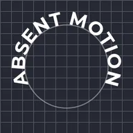

Texte sur tracé

Dispose le texte lettre par lettre sur un arc, un cercle ou le contour du calque juste en dessous, en conservant sa mise en forme, ses polices et ses émojis.
Choisissez le Tracé : un arc ou un cercle autour du calque de texte (faites glisser ses points sur le canevas ou saisissez-les), ou Calque inférieur pour suivre ce qui se trouve juste sous le texte dans la liste des calques : un tracé de stylo, une forme, les traits d’un dessin ou les lettres d’un autre texte. Sur un cercle ou tout contour fermé, Position à 50 % centre le texte en haut, de gauche à droite, et 0 % le place en bas ; avec Inverser le tracé activé, 0 % place le texte le long du bas, toujours de gauche à droite. Un tracé composé de plusieurs parties est suivi l’une après l’autre. Le texte sur un tracé ne passe pas à la ligne dans sa zone de texte : commencez vous-même une nouvelle ligne pour une deuxième rangée.
Réglages
| Réglage | Type | Plage | Par défaut |
|---|---|---|---|
| Tracé | Choix | Arc, Cercle, Calque inférieur | Arc |
| Position | Nombre | De -500% à 500% | 50% |
| Alignement | Choix | Gauche, Centre, Droite | Centre |
| Décalage de ligne de base | Nombre | De -2000 à 2000 | 0 |
| Rotation des lettres | Activé ou désactivé | – | Activé |
| Inverser le tracé | Activé ou désactivé | – | Désactivé |
| Début | Point (X, Y) | De -20000 px à 20000 px | -300 px, 80 px |
| Contrôle 1 | Point (X, Y) | De -20000 px à 20000 px | -200 px, -120 px |
| Contrôle 2 | Point (X, Y) | De -20000 px à 20000 px | 200 px, -120 px |
| Fin | Point (X, Y) | De -20000 px à 20000 px | 300 px, 80 px |
| Centre | Point (X, Y) | De -20000 px à 20000 px | 0 px, 0 px |
| Rayon | Nombre | De 1 à 20000 | 220 |